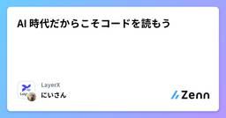

LayerXのフィード
https://zenn.dev/p/layerx
すべての経済活動を、デジタル化する。SaaS + Fintech に取り組む LayerX のエンジニアの記事が集まる Publication です。
フィード

AI 時代だからこそコードを読もう 50
50
LayerXのフィード
はじめにこんにちは。LayerX でバクラク勤怠の開発をしておりますにいさんです。昨今の IT 業界では、事業やプロダクト、イベント登壇、技術ブログ、書籍に至るまで AI の話題を見ない日がないほどになりました。開発者としての日々の仕事も大きく変わり、私自身もゼロから手でコードを書き始める場面はかなり減りました。今回はそんな頼もしい AI の使い方を間違えてしまった私の失敗談と、そこから「AI 時代だからこそコードを読むことが大事だ」と感じた話をシェアさせてください。 入社してすぐのとある日入社して全社的なオンボーディングを終え、本格的にチームに合流した日のことです。...
8日前

DASH 2026に登壇した勢いでDatadogの最新AIエージェント機能を即本番導入してみた
LayerXのフィード
こんにちは。LayerXでAI PlatformのSRE（Site Reliability Engineering）をしている石田（@ishiishi-kenken）です。2026年6月にニューヨークで開催された Datadog DASH 2026 に参加し、「The AI Engineering Playbook: How to Evaluate & Iterate at Every Phase of Development」というセッションに登壇してきました。正直、少し前までは、自分が海外カンファレンスで話すことになるとはあまり想像していませんでした。それが今回、日々向...
9日前
自己改善エージェントはなぜ前提を覆せないのか ― 局所最適とハーネスでの脱出
LayerXのフィード
Ai Workforce事業部FDE部エンジニアの堤(@ozro_223)です。本記事では、AgentにAI Workflowを自己改善させるときに起きる「最初の前提を覆せない」問題について考えます。入力データと正解データを用意し、Agentに実行結果を改善させていくと、途中までは順調に精度が伸びます。一方で、改善の中身を見ると、プロンプトの加筆やコードでの出力正規化（単なる文字列置換や正規表現）の追加に留まり、処理の順序や設計そのものを変える提案はあまり出てきません。この記事では、この現象を整理したうえで、既存の研究でどのような解決策が取られているのかを紹介し、どのように実務に応...
16日前
AI の不時着 ~ コードの国を追われ、要求の国へ ~
LayerXのフィード
序幕さて、これはある朝の話です。目を覚ましたあなたは、見知らぬ国に立っていました。ついこのあいだまで、あなたが暮らしていたのは「コードの国」。手を動かして実装を書ける者が敬われ、難しいアルゴリズムを解ける者が一目置かれる、そういう国でした。ところがある夜、竜巻のような風があなたを巻き上げて、気づけばあなたは国境の向こう、「要求の国」へ不時着していたのです。これからお話しするのは、その不時着がなぜ起きたのか、降り立った先がどんな国だったのか、という物語です。先に結びだけ申しておきましょう。あなたが降り立ったのは、新しく見つかった大陸ではありません。地図から消えかけていた、けれ...
17日前
Claude Code と Datadog MCP で、SRE エージェントの評価から改善まで一気通貫でやってみた
LayerXのフィード
はじめにLayerX で AI Workforce の SRE をしている石田（@ishiishi-kenken）です。いきなり宣伝で恐縮ですが、本記事と重なるテーマで、2026 年 6 月 10 日開催の Datadog DASH 2026 のセッション「The AI Engineering Playbook: How to Evaluate & Iterate at Every Phase of Development」に登壇します。DASH は Datadog が年に一度開催するユーザーカンファレンスで、新機能の発表や活用事例が共有される場です。Datadog・Ta...
1ヶ月前
Goの型安全性で実現する、複数プロダクトを横断する権限管理
LayerXのフィード
はじめにこんにちは。アカウント基盤開発部でエンジニアをしている ishikawa-pro です。今回は、Go の型システムを活用したバクラクの権限管理の仕組みについて紹介します。この記事は、 Layerx.go#4 で登壇した内容をベースにしています。https://speakerdeck.com/ishikawa_pro/gonoxing-an-quan-xing-deshi-xian-surufu-shu-purodakutonoquan-xian-guan-liバクラクは「申請・経費精算」「ビジネスカード」「請求書発行」「勤怠」など複数のプロダクトが1つのアカウント...
1ヶ月前
Ai Workforce 事業部 SRE の 2 人目として行ったアジャイル SRE チームビルディング
LayerXのフィード
LayerX Ai Workforce事業部 でSREをやっているtanimu です。本記事は、私が事業部 2 人目の SRE として 2025年11月 に Join してから約半年、ここまで行ったチームビルディングの試行錯誤を振り返り、そこから得られた学びをお伝えします。最初の2ヶ月はカンバンで走りました。軽さを武器にいろいろ片付けられた一方で、走り続けるうちに「中長期の取り組みが進まない」という壁にぶつかって、スクラムに切り替えました。そこから中長期のマイルストーンを刻みながら、優先度の高い課題の解決を進められる状態を作り、いまは次のチャレンジである Agentic SRE への...
2ヶ月前
97%のPermission確認を自動化するCoding Agent用OSS「ccgate」が誕生した
LayerXのフィード
!Claude / CodexのPermission確認をLLMに代行させるccgateというCLIを作ったもとはAuto Mode的な体験を目指して作り、Auto Modeが使えるようになった今もPlan mode中の確認やCodexへの展開、ログ・metricsの可視化のために使い続けている自分の環境では1ヶ月約2000件のPermission確認のうち、基本的に97%近くが自動化された はじめにこんにちは。@tak848です。今日で25になりました。もうアラサーってやつなんでしょうか。みなさん、Coding Agentは使っていますか？個人的には、個人開発でも...
2ヶ月前
AIエージェントを安全に動かすための技術——サンドボックスについて調べてみる
LayerXのフィード
皆さん、こんにちは。sotamakiと申します。今日は、主にAIエージェント文脈で登場するサンドボックスについて学んだことをまとめていきたいと思います。 前提：AIエージェントは”行動”する最近のAIエージェントは、単に文章を生成するだけでなく、コードを書いて実行し、ブラウザを操作し、外部APIを叩き、ファイルを読み書きします。指示を受け取り、自ら判断しながら一連の操作を完結させます。ユーザー入力 ↓┌─► LLM（思考・計画）│ ↓ tool call│ 外部ツール / API / コマンド│ ↓└── 結果フィードバック ↓ ...
2ヶ月前
"なんとなく改善"からの脱却。Langfuseで作る、精度を改善し続けられるAI開発基盤
LayerXのフィード
バクラク事業部ソフトウェアエンジニアのyataです。生成AI機能、最近よく見ますよね。現在では非常に多くのプロダクトに組み込まれ、日常的に触れることが当たり前になるほど世間に広まってきました。ただ、今までの開発と同じコストや難易度でこの機能が実現できるわけではありません。「精度は微妙だが、それっぽい挙動をするもの」は簡単に作ることができても、「お客様に継続的に使っていただける、安定した精度改善を続けられる機能」を作ることは、想像するよりもずっと難易度が高いと思っています。なぜなら、確率的な挙動をとる生成AIのアウトプットから定量的な精度を測定するのは難しく、改善の効果が分かりに...
3ヶ月前
StorybookでIntegration Testを書くことの良し悪し
LayerXのフィード
この記事は LayerX Tech Advent Calendar 2025 21 日目の記事です。勤怠チームのあない（@pirosikick）です。今年の 8 月に チームにジョインしてから Web フロントエンドのタスクをこなすときはなるべく Storybook の Play function を用いて Integration Test を追加しながらタスクを進めています。結果として Storybook が充実しつつあり、チームメンバーから感謝されることもありました。前職以前では Vitest（or Jest）+ testing-library という構成で Integ...
6ヶ月前
Pythonを書くなら、Ruffのルールページは最高の教材だと思う（AI時代の学び方）
LayerXのフィード
この記事は LayerX Tech Advent Calendar 2025 23日目の記事です。Ai Workforce事業部 プロダクト部 FDEグループ エンジニアの 堤 です。本記事では、プログラムを書き始めたばかりの頃に Pythonの静的解析ツールである Ruff のエラー修正を通じて学んだ経験と、それを踏まえて作った ruff-tutor-mcp というMCPサーバー、そしてAIコーディング時代の学び方について書きたいと思います。最近、エンジニアのみなさんはコーディングエージェントを使っているのではないでしょうか。特に、Claude Codeがリリースされてからそ...
6ヶ月前
PDFのあるあると内部構造を独自XML表現を通して理解したい！
LayerXのフィード
はじめにLayerX Tech Advent Calendar の 18 日目の記事です。今年の 4 月に新卒として入社し、先月からバクラク事業部の Payment 開発部で新規事業の開発をしています。@tak848です。最近は「takのPDF」という謎のSlackスタンプを押されることが増えました。みなさん、普段仕事やAIツールでPDFを扱う機会は多いと思いますが、「PDFの中身がどうなっているか」を意識したことはありますか？私たちは当たり前のようにPDFを作成・閲覧していますが、その裏側にある構造を知る機会は意外と少ないものです。直近の社内LTのネタを考える中で、「P...
6ヶ月前
Git Worktreeでブランチごとにデータベースも分離 —— Docker Volume スナップショットの活用
LayerXのフィード
LayerX Tech Advent Calendar 2025の15日目の記事です。バクラク事業部 ソフトウェアエンジニアの @upamune です。今日は、ローカル開発においての困りごとである、Git Worktreeとデータベースなどの永続化ミドルウェアの組み合わせ問題をいい感じにした話をします。 はじめにAI Coding Agentの登場で、複数の機能を並行して開発する機会が増えました。Agentに任せている間に別の作業を進めたり、レビュー待ちのブランチを放置して次のタスクに取りかかったり。こうした並行開発では、git worktreeが便利です。ブランチごとに独...
7ヶ月前
緯度経度からの住所検索！〜日本の住所に絶望し、希望を見つけるまで〜
LayerXのフィード
この記事は LayerX Tech Advent Calendar 2025 12 日目の記事です。前回は@tigerさんのslack-blockbookというslack appのUI確認を爆速にするライブラリについての記事でした。こんにちは。株式会社LayerXソフトウェアエンジニアのyataです。皆さん、もちろん緯度経度は好きですよね？今回は、緯度経度と住所を用いた開発に取り組んだ際のお話です。「緯度経度から住所を割り出す」。一見簡単そうに見えるこの要件の中で、日本の住所に絶望し、そこから希望を見つけるまでの物語をお届けします。 やりたかったこと今回実装したの...
7ヶ月前
Storybook風SlackApp UIのプレビューツール『slack-blockbook』を作ってみた！
LayerXのフィード
LayerX Tech Advent Calendar 2025の11日目の記事です。バクラク事業部 でバクラク勤怠を作っているソフトウェアエンジニアの @tiger です。今日はSlack Block KitのStorybook風プレビューツール slack-blockbook を作成したので紹介させてください！https://www.npmjs.com/package/@layerx/slack-blockbook 想定読者SlackAppを開発している（または興味がある）エンジニアjsx-slackを使っている開発者 前提：私たちの技術スタック私が属して...
7ヶ月前
ローカル開発のシークレット設定を自動化する ── Go × AWS Secrets Manager
LayerXのフィード
LayerX Tech Advent Calendar 2025の9日目の記事です。バクラク事業部 ソフトウェアエンジニアの @upamune です。今日は、ローカル開発のシークレット設定をいい感じにした話をします。 ローカル開発環境のシークレット設定、手動でやっていませんか？「シークレットは1Passwordにあるので設定してください」開発環境のセットアップでこのようなことを言った・聞いたことがある人も多いのではないでしょうか。APIキーなど、ローカル開発でシークレットの設定が必要なことがあります。この記事では、AWS Secrets Manager と Go の s...
7ヶ月前
組織図リソースと Temporal Data Model の相性についての考察！
LayerXのフィード
はじめにこんにちは、バクラク事業部アカウント基盤開発部の @convto です。 こちらはLayerX Tech Advent Calendar 20253日目の記事です。よろしくお願いします。昨日は @su8 さんによる 目にやさしい仕様駆動開発「spec-workflow-mcp」がもたらすブルーベリー効果 でした！いらすとやにマサイ族の素材があるのを初めて知りました。さて今回は組織図の話です！組織図関連の話ですと、今年の頭に以下の記事を書かせていただきました。https://tech.layerx.co.jp/entry/2025/03/31/150000この時に「...
7ヶ月前
目にやさしい仕様駆動開発「spec-workflow-mcp」がもたらすブルーベリー効果
LayerXのフィード
この記事は、LayerX Tech Advent Calendar 2025 の 2日目の記事です。https://tech.layerx.co.jp/entry/tech-advent-calendar-2025初日は @frkake さんの「OCR技術の変遷と日本語対応モデルの性能検証」と、@izumin5210 さんの「思考を減らしコードに集中するための tmux, Neovim 設定」の豪華二本立てでした。こんにちは、@su8/denchuです。クラナドは人生。電柱が好きです。現在、マサイ族の驚異的な視力を瞳に宿せると噂の「とあるブルーベリーのサプリメント」（諸説あ...
7ヶ月前
思考を減らしコードに集中するための tmux, Neovim 設定
LayerXのフィード
LayerX Tech Advent Calendar 2025 記念すべき1日目の記事です。めでたいですね。初日は @frkake さんの「OCR技術の変遷と日本語対応モデルの性能検証」との二本立てです。バクラク事業部 スタッフエンジニアの @izumin5210 です。Platform Engineering 部 Enabling チームでいろいろなことをしています。最近は AI Agent 基盤開発系の話ばっかりしてたので、今日は AI じゃなくて Vim の話をします。開発環境のカスタマイズ、楽しいですね？ 楽しくなっちゃっていろいろ入れちゃいがちです。 が、自分は最...
7ヶ月前